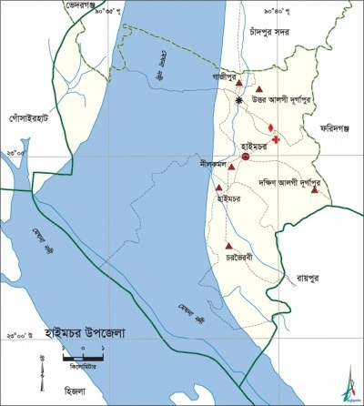
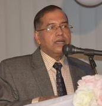
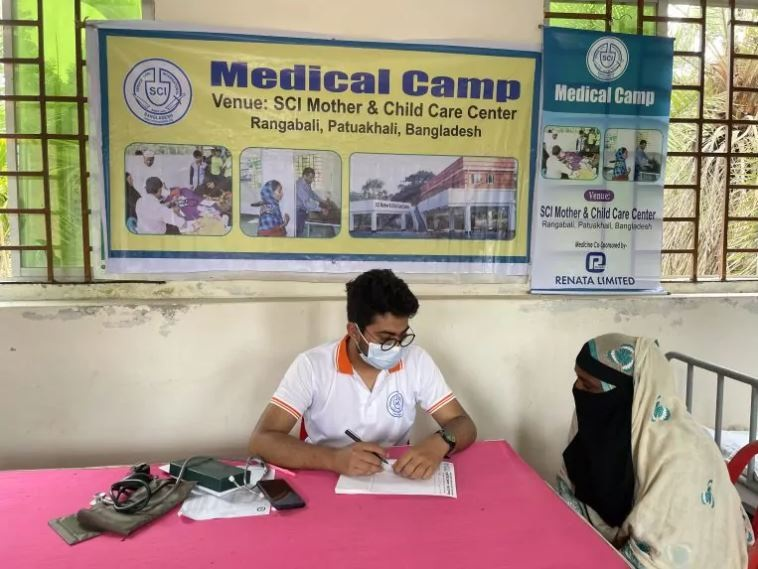
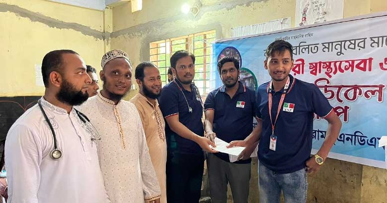
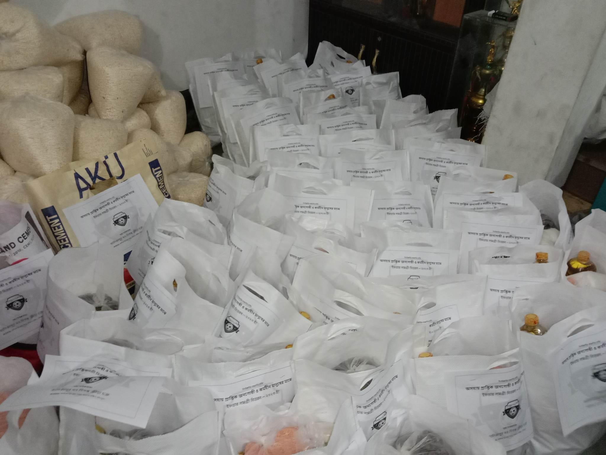

মানব কল্যাণে নিবেদিত
সমৃদ্ধ ও সুস্থ সমাজ
গড়াই আমাদের লক্ষ্য
শিক্ষা, স্বাস্থ্য, কর্মসংস্থান ও মানবিক সহায়তার মাধ্যমে হাইমচরের মানুষের জীবনমান উন্নয়নে আমরা নিরলস।

আমাদের সম্পর্কে
হাইমচর উপজেলা জনকল্যাণ সমিতি, ঢাকা একটি অলাভজনক, অরাজনৈতিক এবং সম্পূর্ণ দাতব্য সংস্থা। সমাজের বিভিন্ন স্তরের মানুষের জীবনে ইতিবাচক পরিবর্তন আনার লক্ষ্যে সংগঠনটি সমাজ সংস্কার, নৈতিক শিক্ষা, কর্মসংস্থান, দারিদ্র্য বিমোচন ও স্বাস্থ্যসেবায় কাজ করে যাচ্ছে।
মূল লক্ষ্য সমাজের সর্বস্তরের মানুষের জীবনমান উন্নত করা এবং শিক্ষা, স্বাস্থ্য ও নৈতিকতার বিকাশের মাধ্যমে একটি সমৃদ্ধ ও সুস্থ সমাজ গড়ে তোলা।
এক নজরে হাইমচর
মেঘনা নদী ও সুস্বাদু ইলিশ মাছ হাইমচরের প্রধান প্রাকৃতিক ঐতিহ্য।
ধান, গম, পাট, পান, সুপারি, সয়াবিন, আলু ও শীতকালীন শাক-সবজি।
২ কলেজ, ১২ মাধ্যমিক বিদ্যালয়, ৬৫ প্রাথমিক বিদ্যালয় ও ২৬ মাদ্রাসা।
১৫৫ মসজিদ, ১৮ মন্দির, ৪ মাজার এবং ১টি তীর্থস্থান।
সাংগঠনিক কাঠামো
প্রাক্তন হিসাব মহানিয়ন্ত্রক (সিজিএ), বাংলাদেশ সরকার
প্রাক্তন অতিরিক্ত সচিব, বাংলাদেশ সরকার

প্রাক্তন ডি.আই.জি, বাংলাদেশ পুলিশ
সচিব, যুব ও ক্রীড়া মন্ত্রণালয়
জনকল্যাণ কর্মসূচী
স্বল্পমূল্যে বা বিনামূল্যে স্বাস্থ্যসেবা ও চিকিৎসা পরামর্শ।
মেধাবী ও অসচ্ছল শিক্ষার্থীদের বৃত্তি ও শিক্ষা সহায়তা।
শীতার্ত অসহায় মানুষের মাঝে প্রয়োজনীয় শীতবস্ত্র বিতরণ।
সুবিধাবঞ্চিত পরিবার ও শিশুদের ঈদের আনন্দে যুক্ত করা।
জরুরি পরিস্থিতিতে অসহায় পরিবারকে আর্থিক সহায়তা।
বেকার যুবকদের প্রশিক্ষণ ও স্বাবলম্বী হওয়ার সুযোগ সৃষ্টি।
সদস্য
সমিতির নিবন্ধিত সাধারণ সদস্যদের তথ্য
| # | ছবি | নাম | সদস্য নং | মোবাইল | ঠিকানা | পেশা | ব্লাড | পরিচয়দানকারী |
|---|
সদস্য হোন
হাইমচরে জন্মগ্রহণকারী অথবা যাঁদের পূর্বপুরুষ হাইমচরের অধিবাসী ছিলেন এবং বর্তমানে দেশে বা বিদেশে অবস্থান করছেন, তাঁরা আবেদন করতে পারবেন।
ইভেন্ট ও গ্যালারী

চিকিৎসাসেবা ও প্রয়োজনীয় পরামর্শ প্রদান।

শিক্ষার্থীদের মাঝে সহায়তা ও অনুপ্রেরণা।

দুর্যোগ ও সংকটে মানুষের পাশে সহযোগিতা।
ব্লাড ব্যাংক
জরুরি মুহূর্তে স্বেচ্ছায় রক্তদাতা ও রক্তপ্রয়োজনকারীকে দ্রুত সংযুক্ত করার মানবিক উদ্যোগ।
নোটিশ
যোগ্য আগ্রহীরা প্রয়োজনীয় তথ্যসহ যোগাযোগ করতে পারবেন।
স্থান ও সময় শিগগিরই প্রকাশ করা হবে।
যোগাযোগ
পরামর্শ, সহযোগিতা অথবা সদস্যপদ সংক্রান্ত যেকোনো বিষয়ে যোগাযোগ করুন।
📍 হোল্ডিং নং-ক-২৭/১ এ, রসুলবাগ, মহাখালী, ঢাকা-১২১২
(আইসিডিডিআরবি-এর বিপরীতে)